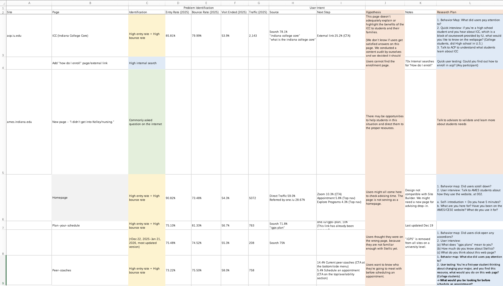
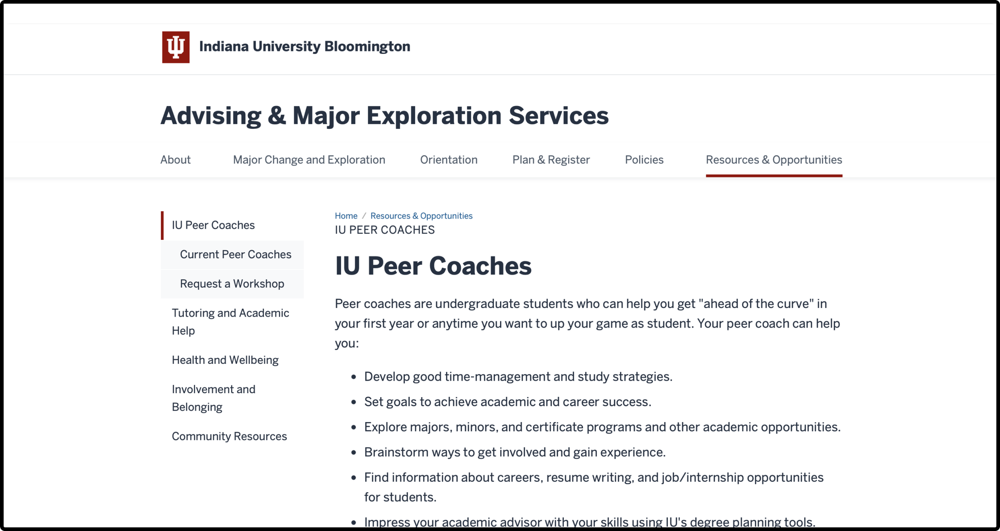
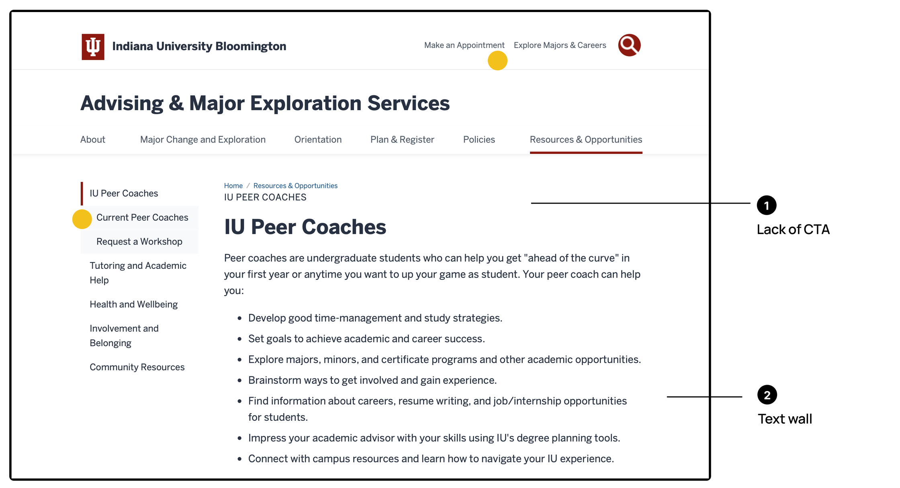
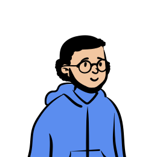
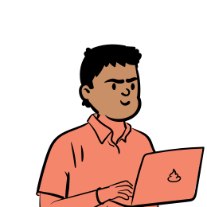
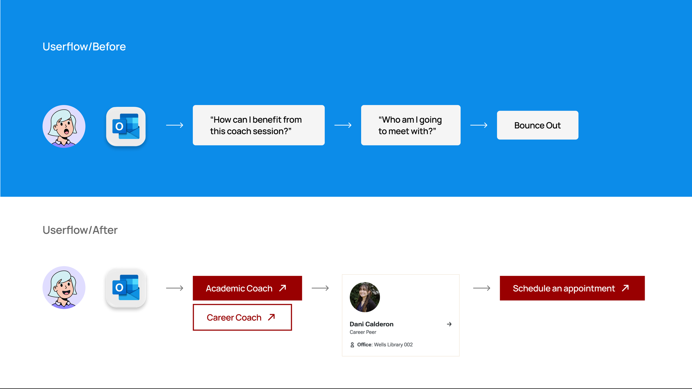
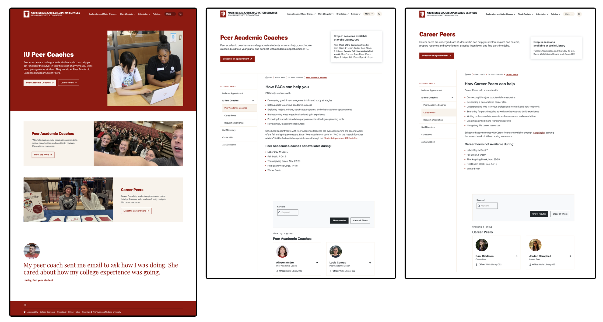

Resolving a high bounce rate with rapid mixed-methods research
Timeline
3 weeks
Role
Solo UX Researcher
Team
Project Manager
Developer
Methods
Web Analytics
User Interviews
Usability Testing
Prototyping
TL;DR
I led this rapid research project end to end, partnering with business stakeholders to identify problems and implement changes that lifted sign-up conversion from 9.3% to 24.7% within a month, alongside a 10% drop in bounce rate. I took a mixed-methods approach: website analytics revealed what was going wrong, and user interviews and usability testing explained why.
Scoping
Narrowing 12 problems across 35 websites down to four
At Indiana University, I owned routine performance reporting and benchmarking for 35 university websites.
I tracked two signals across these sites: ❶ landing pages with a high bounce rate, and ❷ keywords that showed up unusually often in internal search. Together they flagged 12 potential problems.
I prioritized those with high traffic and no clear cause, which left 4 to research. This case study walks through one of them.

Context
Spotting a high-traffic page that was losing visitors
This case study focuses on the landing page for Peer Coach, a service from the undergraduate education office where trained undergraduates coach younger students on academics and careers.
The page drew heavy traffic, but most visitors left without signing up.
1,000+
visitors a day
85%
bounce rate
9.3%
went on to sign up

Forming Hypotheses
Reading behavior data to see where visitors dropped off
A UX audit and the site’s analytics data helped me form early hypotheses about the cause, which set the direction for user research.
Traffic Source
Students arrived on purpose, so intent wasn’t the problem.
Next Step
Click map from Siteimprove ( below): students wanted to see the coaches’ profiles before booking.
Scroll Depth
25.6%
average scroll depth. Most visitors didn’t scroll down.
Hypotheses
- 01The page doesn’t give students what they need: they want to see a coach’s profile before deciding to sign up.
- 02With no clear call to action, students don’t know what to do next.

Choosing Methods
Why were visitors leaving the landing page without signing up?
Interview
Intercept interview
- Our office was inside the library, so recruiting was fast and free
- More participants, from a more diverse pool of students
- The question didn’t need long sessions to answer
In-depth interview
- Richer data, but higher recruiting and incentive costs
- Longer timeline
- Better suited to early-stage, generative research
User Testing
Moderated user testing
- Paired with the interview, so I could tailor tasks to each student’s experience with the site
- Let me follow up in the moment
Unmoderated user testing
- A large sample wasn’t needed, since site analytics already covered that
- The team had no paid testing platform
Study Design
Intercept Interview + Moderated User Testing
-
Before
Recruiting
- 8 undergraduates
- Approached students waiting in the library lobby or in line for coffee at the café
- Excluded students with part-time jobs in our office
-
30 sec
Introduction
- My name and role
- The purpose of the study
-
8 min
Semi-structured interview
- 2 main questions, plus follow-ups
- Do you need academic advice (choosing or changing a major) or career advice (finding internships, planning a career path)? What questions or challenges are you facing right now?
- Who do you think could help you?
-
7 min
Usability test
- Started from a template task
- Adjusted it to each student’s situation from the interview
Template task
Your advisor sent you this page and suggested talking to a peer coach. Look around and decide whether you’d book a session. Please think aloud as you go.
Key Insights
The sessions confirmed both hypotheses and added more detail
Hypothesis 01: confirmed
- 01Students want to see a coach’s profile before deciding to book.
Hypothesis 02: confirmed, and we learned why
- 02Students with academic needs and those with career needs are two distinct groups.
- 03The names “Peer Academic Coaches” and “Career Peers” aren’t intuitive, so students find them confusing.

The Major Explorer
First-years still choosing a major
Wants to know
- How do I explore my interests through courses and activities?
- How did seniors choose or switch their majors?

The Career Planner
Students with a major, planning for after graduation
Wants to know
- How do I find an internship?
- What jobs can my major lead to?
- How do I explore different career paths?
Design Decisions
Turning insights into two product changes
- 01Put coach profiles on the page
Profiles used to live only in the scheduling system. Now students see who they’d meet before booking.
Based on insight 01 - 02Split academic and career into two paths
Students pick a path up front, so each group sees only what it needs and no longer has to decode the coach names.
Based on insights 02 & 03


Impact
Analytics data from Siteimprove, one month after the changes went live.
Sign-up Conversion
9.3% → 24.7%
Bounce Rate
−10%
“Now I can see a peak in our coaching appointments after I send out an email. I’m happy that students are now making better use of the university resources.”
Coaching coordinator, stakeholder